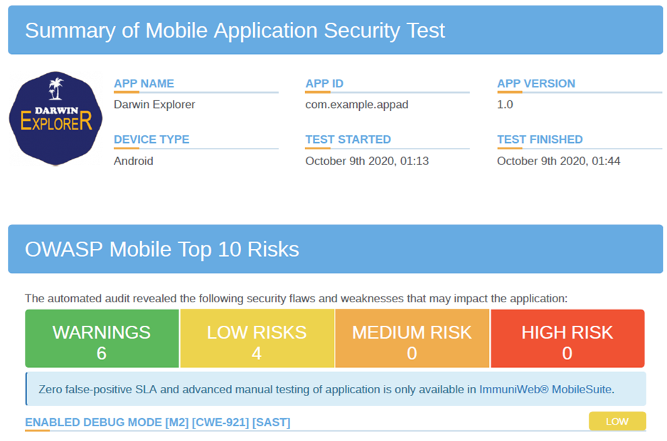
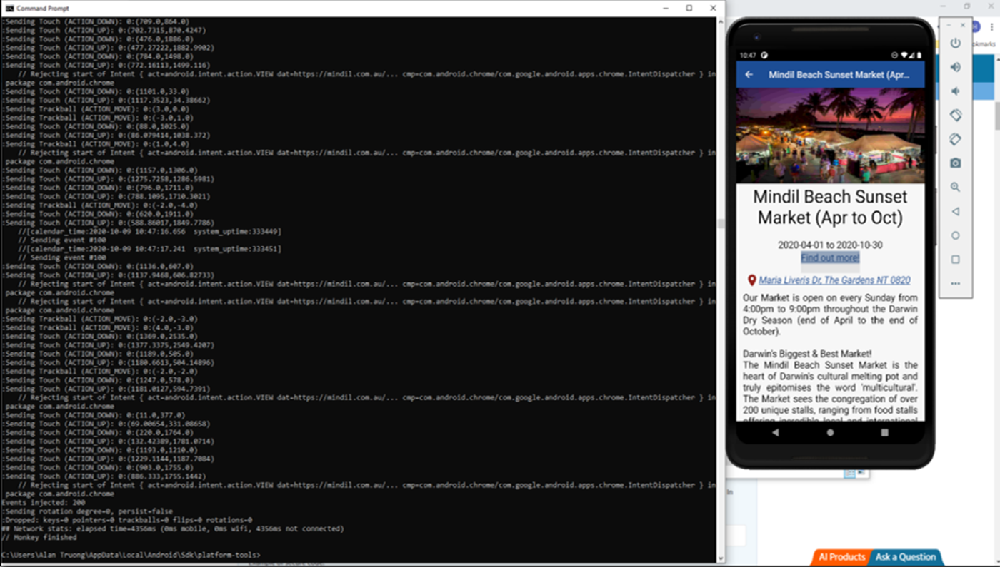

Darwin Explorer Travel App
Project Link
Description
The project is about building a travel app for user to explore the interest places in Darwin, Northern Territory. The app was built on android studio software for android phone. The app shows eating, dinning, and shopping places. It also demonstrates news and upcoming events in Darwin. The purpose of this app is help people to explore Darwin with the most convenience.
Objectives
Provide a conversational agent as an interface between the user and useful tourist’s information.
Scopes
- Requirement gathering & Market Research
- Database & Prototype Design
- Fontend & Backend Design
- Developing functional & non-funtional requirements
- UI, performance & security testing
- Report
Testing
TDD Unit Testing
Test-Driven Development (TDD) is used as a practice in the development process to ensure the program meets requirements, preventing big bug and ensure the possible solution is the minimum amount of code to pass the test
Security Testing

performance Testing
By conducting the stress test on Darwin Explorer app using MonkeyRunner, the sensibility shows that all test cases the android device responds over 99% of the number of events (as shown in Table 1). This stress presents the high sensibility and high stability of the android device when running the Darwin Explorer. 
Result & Reflection
Result:
- Achieved the IT Code Fair reward
- Enhance the travel experience and promote tourism
Found Limits:
- Dependence on app updates and internet connection
- Rely heavily on capturing the full depth of local knowledge, so the information in apps can become outdated quickly